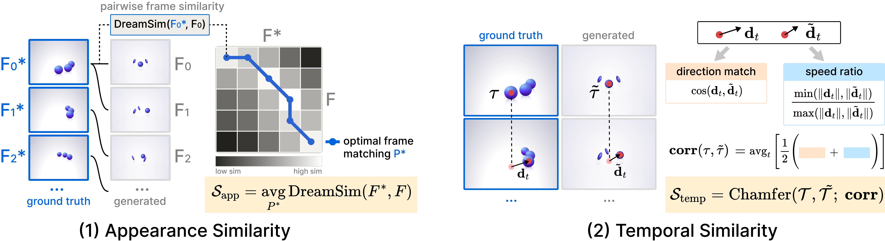
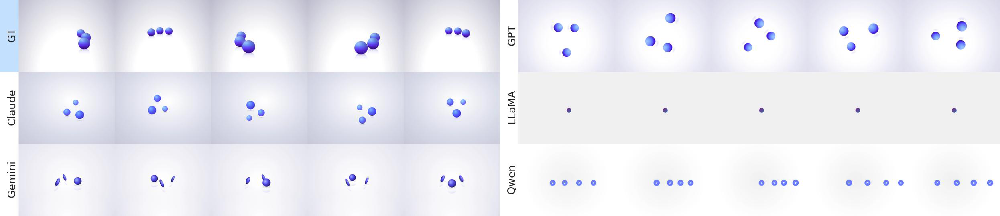
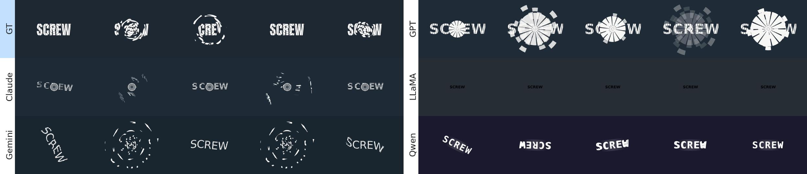
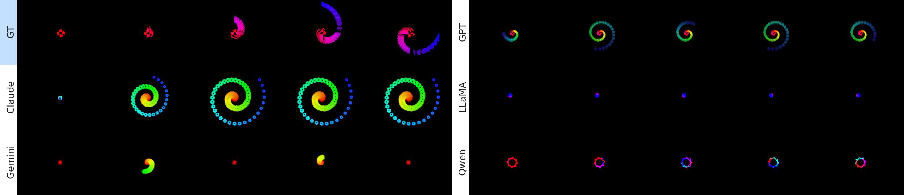
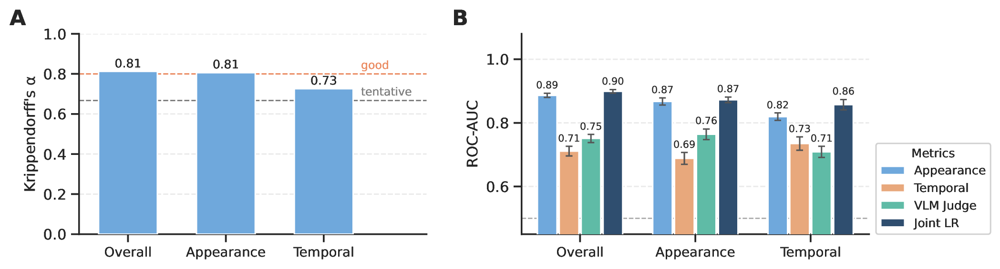

Animation2Code
Evaluating Temporal Visual Reasoning in Video-to-Code Generation
Abstract
While recent vision-language models (VLMs) have achieved significant improvements on static visual-to-code tasks such as generating code for webpages, charts, or SVGs, it remains unclear whether VLMs are able to recover temporal dynamics when motion is present. To this end, we introduce the animation-to-code task, along with a benchmark, Animation2Code, for evaluating temporal visual reasoning via reconstructing executable web animation code from videos. Animation2Code consists of 1,069 web animation videos with diverse visuals and motion patterns, augmented with corresponding HTML/CSS/JavaScript implementations. We further pair the dataset with several novel human-aligned metrics that disentangle visual similarity from temporal alignment when comparing rendered animations to ground-truth samples. We benchmark current SOTA models and show that they struggle with temporal consistency, even when achieving high appearance similarity, and even under fine-tuning and iterative refinement.
Benchmark Statistics
Key Contributions
A new task & benchmark
The first benchmark for dynamic visual perception through de-rendering web animations into executable code — 1,069 real-world video–code pairs with diverse motion patterns.
Human-aligned metrics
An automatic evaluation suite that disentangles appearance from temporal similarity, validated to agree with human preference and to outperform VLM-as-a-judge in each dimension.
A consistent temporal gap
SOTA VLMs reach near-perfect execution (up to 100%) and strong appearance (up to 0.84), yet temporal similarity stays low (≤ 0.31) across zero-shot, fine-tuning, and refinement.
Evaluating De-Rendering
We evaluate generated animations along two complementary axes, both computed on the cropped animated region so they remain agnostic to absolute on-page positioning:
- Appearance similarity compares DreamSim embeddings of frames aligned with Dynamic Time Warping, capturing color, shape, and style.
- Temporal similarity compares motion trajectories (extracted with CoTracker3) via a direction- and speed-aware correlation, aggregated with Chamfer-style matching.

We isolate animated regions via cropping, compute appearance similarity using DreamSim with DTW alignment, and measure temporal similarity via tracklet displacement correlation aggregated with a Chamfer-style matching.
Results
| Setting / Model | FPS | Exec (%) | Appearance | Temporal |
|---|---|---|---|---|
| Native video input | ||||
| Gemini-3 Flash Preview | 24 | 99.1 | 0.80 | 0.31 |
| Gemini-3 Flash Preview | 2 | 98.1 | 0.80 | 0.30 |
| Qwen3-VL-8B-Instruct | 24 | 84.6 | 0.69 | 0.24 |
| Qwen3-VL-8B-Instruct | 2 | 85.5 | 0.67 | 0.23 |
| Image-frame input | ||||
| GPT-5.4 | 2 | 100.0 | 0.84 | 0.29 |
| Gemini-3 Flash Preview | 2 | 100.0 | 0.80 | 0.30 |
| Claude Sonnet 4.6 | 2 | 99.5 | 0.82 | 0.29 |
| LLaMA 4 Scout | 2 | 97.7 | 0.62 | 0.21 |
| Qwen3-VL-8B-Instruct | 2 | 80.4 | 0.70 | 0.24 |
| SFT / refinement (Qwen3-VL-8B, video input) | ||||
| + LoRA | 2 | 98.6 | 0.43 | 0.09 |
| + Full SFT | 2 | 94.9 | 0.46 | 0.08 |
| + Iterative Refinement | 2 | 85.5 | 0.73 | 0.28 |
Exec (%) is the share of examples whose generated code runs successfully. Best score per metric in bold.
Qualitative Examples



All models struggle with precise motion and spatial relationships, even when overall appearance is partially correct. Some models capture object appearance (e.g., 3D balls) but reproduce the wrong trajectory or arrangement, while others collapse to static or linear motion.
Human-Aligned Evaluation
We collected 600 pairwise preference comparisons from 65 Prolific annotators across overall quality, appearance, and temporal similarity. Inter-annotator agreement is strong for overall and appearance (Krippendorff's α = 0.81) and lower but reliable for temporal (0.73) — motion is inherently harder to judge. Our automatic metrics predict human preference better than a VLM-as-a-judge baseline in their respective dimensions.

(A) Inter-annotator agreement per judgment dimension. (B) ROC-AUC for predicting human preference from metric deltas, VLM annotations, and a joint logistic regression. Our metrics align with human preference better than VLM-as-a-judge in their respective dimensions.
Explore the Benchmark Dashboard
Browse rendered model outputs side-by-side with ground truth and inspect per-example metric scores.
⭐ Go to DashboardAll public CodePen content is MIT-licensed. Copyright belongs to the original authors.
BibTeX
@article{ji2026animation2code,
title = {Animation2Code: Evaluating Temporal Visual Reasoning in Video-to-Code Generation},
author = {Ji, Anya and Mudunuri, Abhijith Varma and Chan, David M. and Suhr, Alane},
year = {2026},
journal = {arXiv preprint TBD},
}